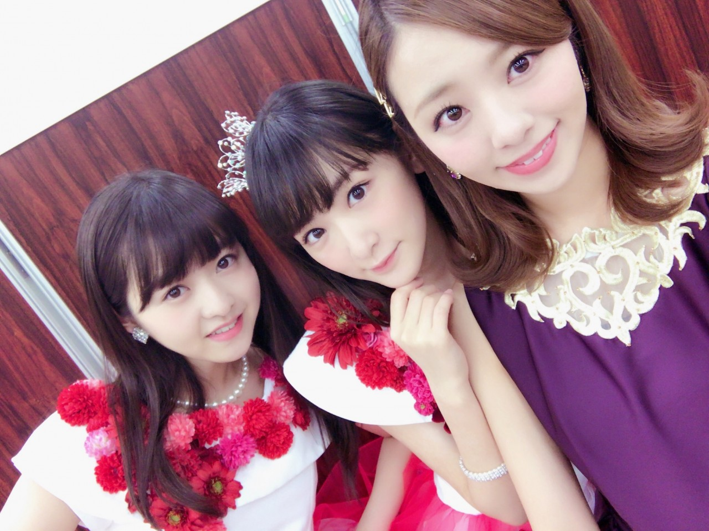
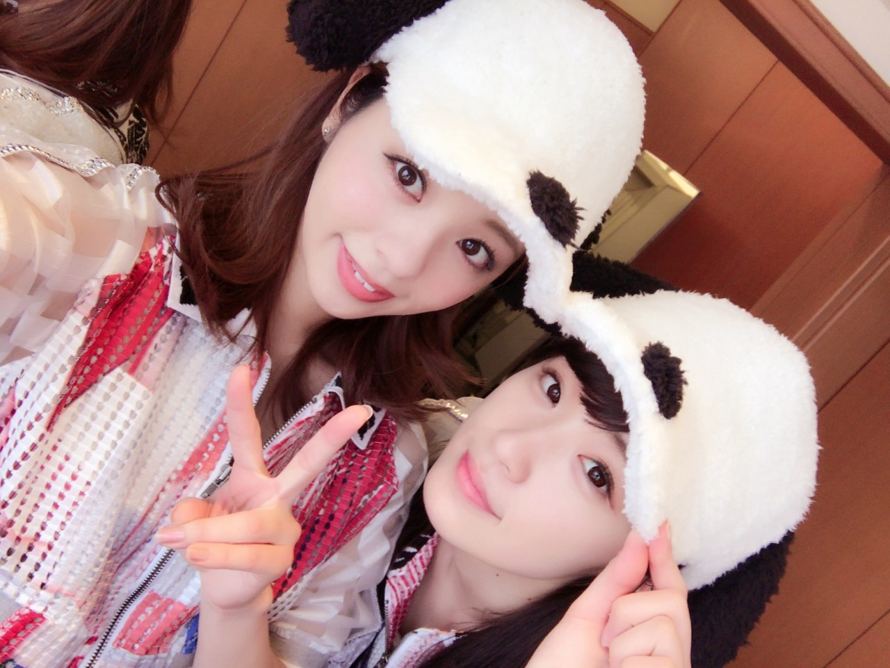
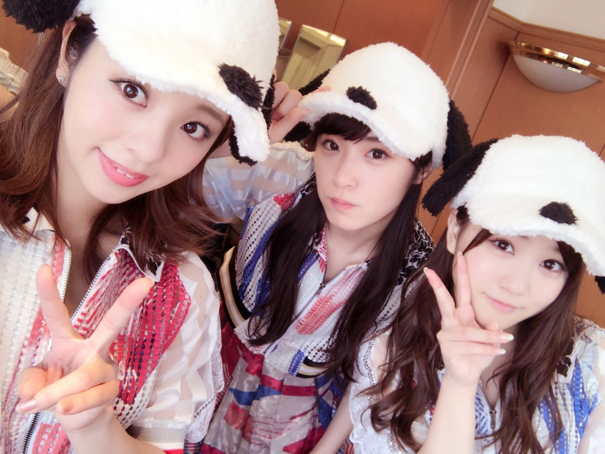
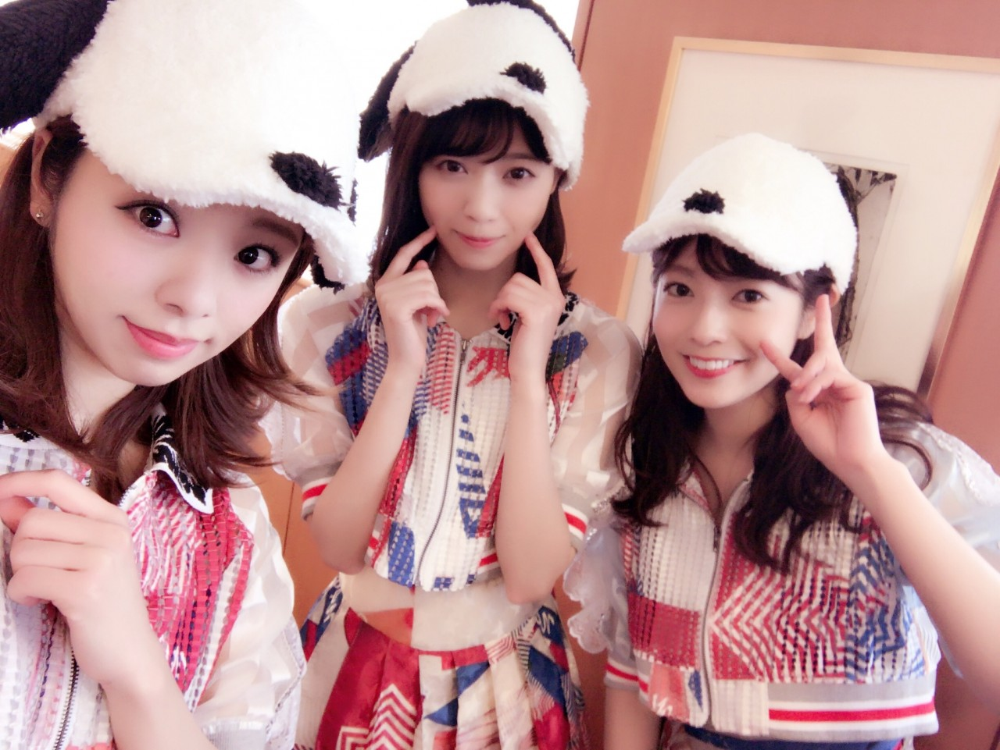

こんにちわ♡
今日は13日の金曜日...
さて何かしかけますか...
んー めんどっちぃ♡
誰かに嘘でもつこおっと。
95年組．

はい．とゆーことで明日は京都で握手会ですよ！
私...年始から大阪京都和歌山と，関西しか行ってません 笑
でも嬉しいよ♡♡
大阪でレギュラー決まったりしたら最高なんだけどね... そうすると毎月行き来が大変なのかしら？？
そしてまいちゅんと初ペアです！
きっとまいちゅん推しの方とは初めましての方が沢山いらっしゃると思いますが。
初めての方に「ろってぃー意外！」って言われ慣れてるほど，わりかし『のほほ～ん』かつ『明るく』やっておりますので，是非のほほ～んと元気に来てくださいね～(*´꒳`*)
まいちゅんとろってぃー仲良いの？って質問何個かされたんだけど...
私が特に用もないのに「まいちゅん～」って名前だけ呼んで「どした～？」って返事してくれるのに，名前言いたいだけだから特に会話も広がらず...って感じですね♡♡
そしてまいちゅんの話するのは大好き!笑 だからまあやのモノマネとかかなり好きです。
そんな感じで明日は楽しみです♪
見て！ このズー超綺麗だよ。

加えてみなみちゃん。
みなみは目が可愛いんだよね。

そして七瀬とゆうり。

ぁ、七瀬とユニバで買い物したんだけどね、あれ買ったよ。お♡♡♡笑
今女の子用のでもボクサーあるじゃん？
『今日，ちょっと男な気分だわ。」って時に（どんな気分だよ。笑）、七瀬に連絡して履いてくね♡笑
ゆうりはね～、、
とにかく「スヌーピーの帽子帽子帽子‼︎」ってずぅーっと言ってた 笑
『今度スヌーピーの何かプレゼントするね』って思ったけど言わなかった♡笑
何かメンバーの事よく書いたblogになった気がする。
のんびりした時にさ、メンバーの好きな所を考えたりするんだけどさ、そうすると幸せな気持ちになるんだよね。
いつも当たり前の様に会ってるから，いろんな事が当たり前になりがちで，気づくことも気づかなくなってくるからさ。
そんな感じでこれからも皆さんよろしくね。
またね♡